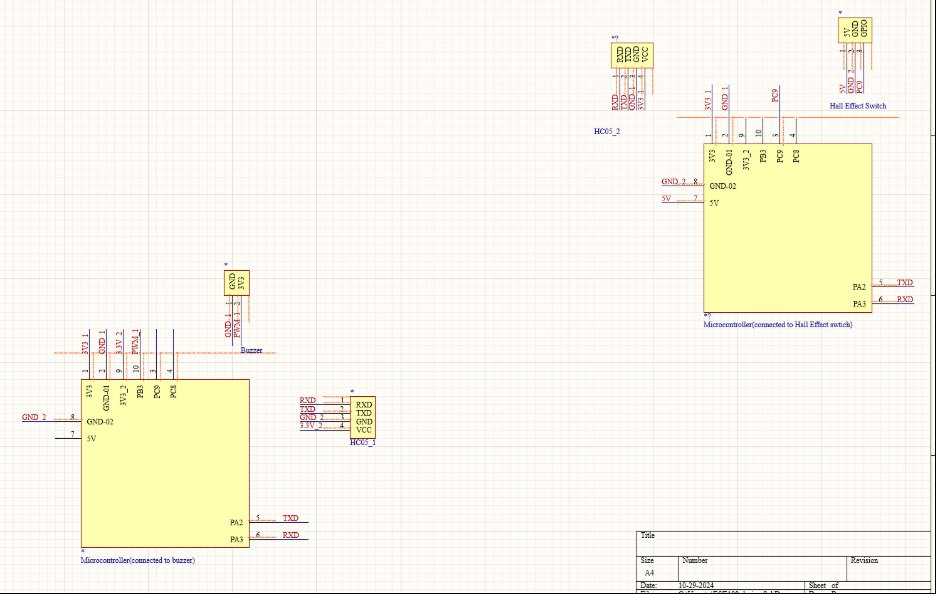

Hall-Effect Anti-Break-In Alarm for Hard-of-Hearing Users
An STM32-based intrusion alarm using hall-effect sensing on doors and windows, with the output stage specified around a 70 dB intensity range chosen for users with hearing loss.
The brief
Standard intrusion alarms assume the occupant can hear them. For someone with significant hearing loss that assumption fails exactly when it matters most. This prototype targets a 70 dB intensity range selected as the best fit for hard-of-hearing individuals, rather than defaulting to whatever the cheapest buzzer happens to produce.
How it works
A hall-effect sensor and paired magnet sit across the door or window seam. When the opening breaks, the field at the sensor changes and the STM32 registers the state transition and triggers the alarm output. Hall sensing is a good fit here — there are no mechanical contacts to wear out or be jammed, and the sensor can be mounted concealed on the inside face of the frame.
Schematic

Documentation
A full design document and source documentation accompany the prototype, covering the sensing threshold selection and the reasoning behind the acoustic output specification.
Design document and source repository link still to be added here.